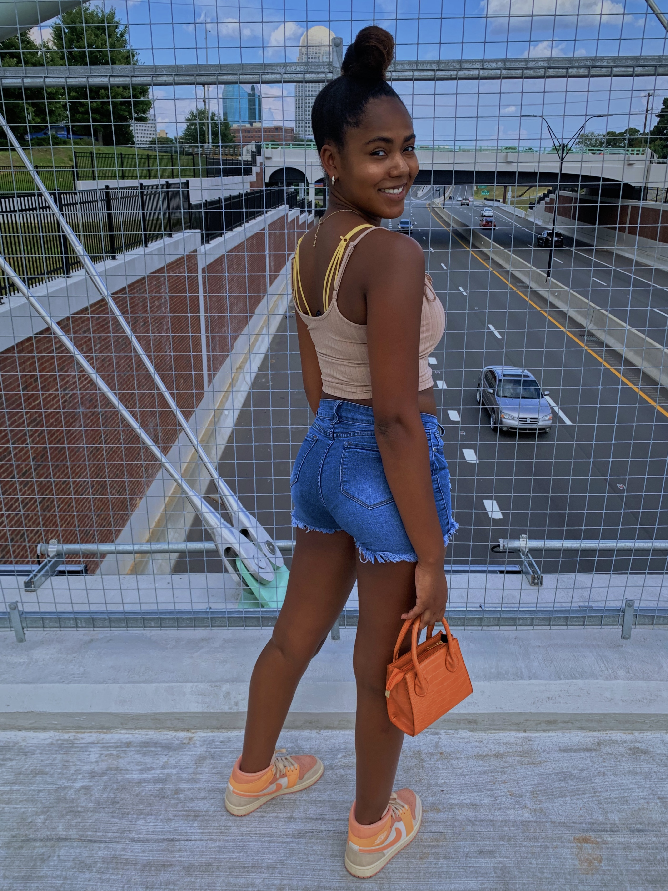

Who am I?
Hello to everyone reading! I am Alexis Cooper. I am a young black female. I was born in March of 2003. I am 19 years old.
School
K-12 I attended all my schooling in the North Carolina, mostly Winston-Salem area for my upbringing.
Ashley Elementary in Winston-Salem, Forsyth County.
Paisley Middle IB Magnet in Winston-Salem, Forysth County.
I then transferred due to the moving of home adresses to, Walkertown Middle in Walkertown, Forsyth County.
Walkertown High in Walkertown, Forysth County where I graduated in 2021.
Now, I am a undergraduate student at Elon Uiversity, located in Elon, North Carolina in Alamance County.
Passions and Values
I value things like religion, family, and education. My passions co-exist with my values because I hope to excel in every one of my values. I aspire to be a journalist/reporter post-graduation. Providing for my fmaily who have support me along the journey of my life. I also hope to grow in faith and relationship with God.